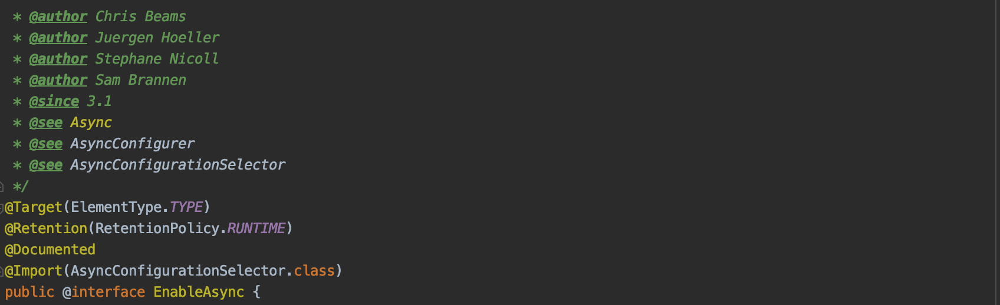
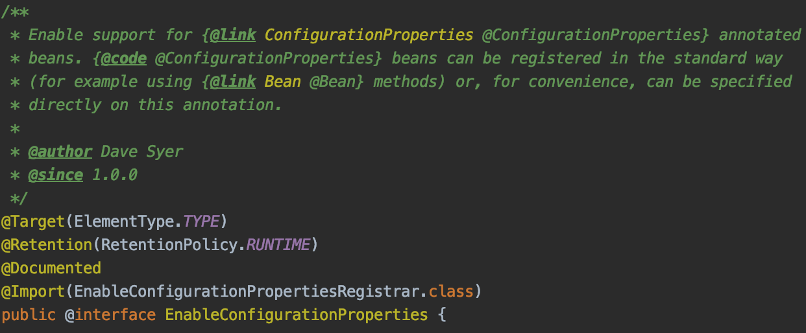
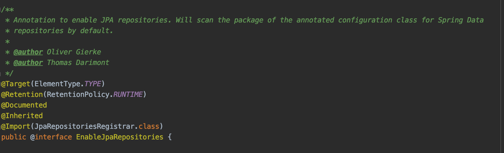
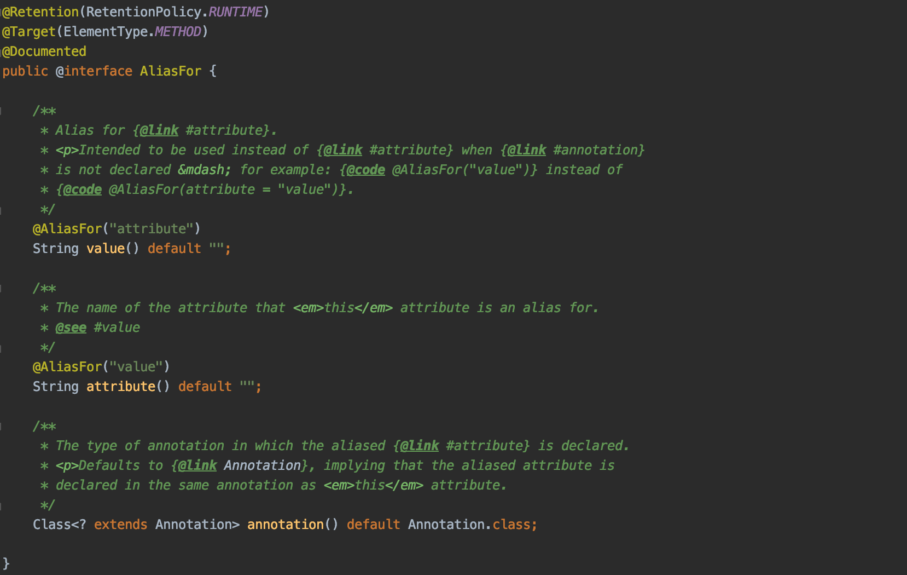
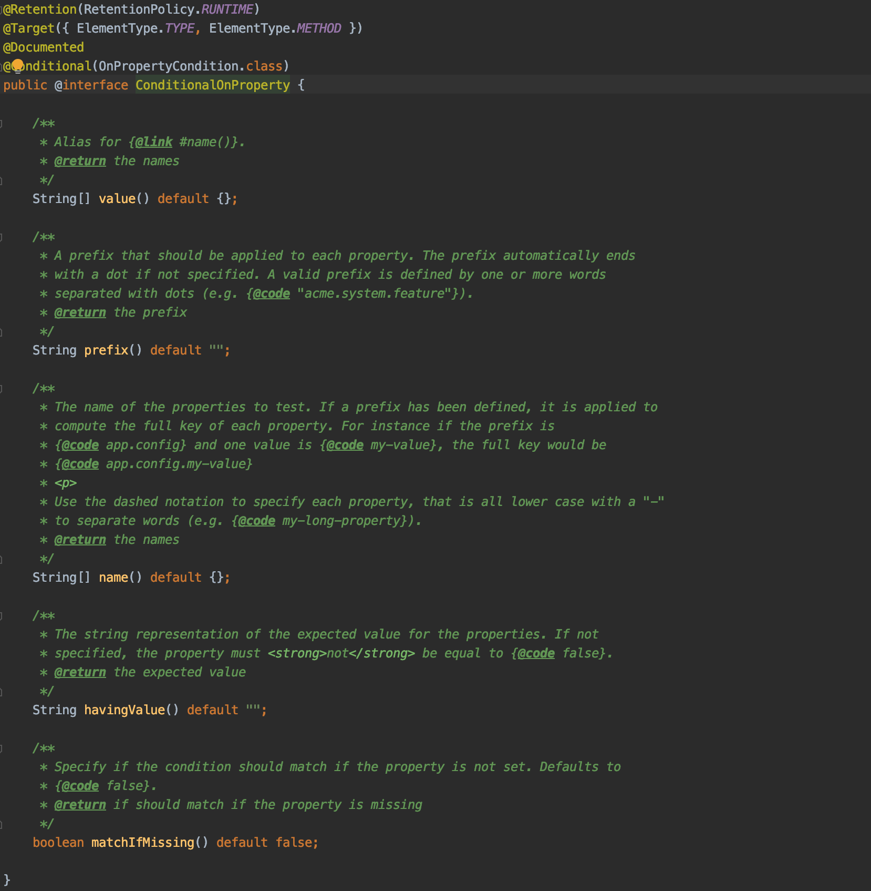

Multi 모듈 프로젝트에서 발생하는 일 Maven, Gradle을 이용해서 멀티 모듈을 구성하다 보면 각 모듈 별로 중복된 Bean을 계속 생성 코드를 만드는 경우가 있습니다.
예시 : Custom Module에서만 사용하는 JPA 환경 구성입니다.
1 2 3 4 5 6 7 8 9 10 11 12 13 14 15 16 17 18 19 20 21 22 23 24 25 26 27 28 29 30 31 32 @EntityScan(basePackages = {"com.your.packages.module1"}) @EnableJpaRepositories(basePackages = {"com.your.packages.module1"}) @Configuration class Module_1_Configuration { @Bean @ConfigurationProperties(prefix = "spring.custom-module.datasource") public HikariConfig hikariConfig () { return new HikariConfig (); } @Bean @FlywayDatasource public DataSource dataSource (HikariConfig hikariConfig) { return new HikariDataSource (hikariConfig); } @Bean public LocalContainerEntityManagerFactoryBean entityManagerFactory ( EntityManagerFactoryBuilder builder, DataSource dataSource ) { return builder.dataSource(dataSource) .packages("com.your.packages.module1" ) .build(); } @Bean public JpaTransactionManager transactionManager (EntityManagerFactory entityManagerFactory) { return new JpaTransactionManager (entityManagerFactory); } }
1 2 3 4 5 6 7 8 9 10 11 12 13 14 15 16 17 18 19 20 21 22 23 24 25 26 27 28 29 30 31 @EntityScan(basePackages = {"com.your.packages.module2"}) @EnableJpaRepositories(basePackages = {"com.your.packages.module2"}) @Configuration class Module_2_Configuration { @Bean @ConfigurationProperties(prefix = "spring.custom-module.datasource") public HikariConfig hikariConfig () { return new HikariConfig (); } @Bean public DataSource dataSource (HikariConfig hikariConfig) { return new HikariDataSource (hikariConfig); } @Bean public LocalContainerEntityManagerFactoryBean entityManagerFactory ( EntityManagerFactoryBuilder builder, DataSource dataSource ) { return builder.dataSource(dataSource) .packages("com.your.packages.module2" ) .build(); } @Bean public JpaTransactionManager transactionManager (EntityManagerFactory entityManagerFactory) { return new JpaTransactionManager (entityManagerFactory); } }
위의 두 Configuation 코드는 99% 같은 코드입니다.
첫 번째는 packages 설정이 달랐습니다.
packages(“com.your.packages.module1”)
packages(“com.your.packages.module2”)
두 번째는 EntityScan, EnableJpaRepositories의 basePackages 설정이 달랐습니다.
basePackages = {“com.your.packages.module1”}
basePackages = {“com.your.packages.module2”}
세 번째는
module1에서는 DataSource Bean에 @FlywayDataSource annotation이 있고
module2에서는 DataSource Bean에 @FlywayDataSource annotation이 없습니다.
코드가 거의 같더라도, 약간의 설정이 다르다는 이유로 거의 같은 두 개의 Configuration을 사용했습니다.
리팩토링1 - @EnableCustomDataSource Spring을 사용하다 보면 @Enable~ 하는 Annotation을 자주 보았을 것이고, 실제로도 많이 사용해 보셨을 겁니다.
EnableCaching
EnableTransactionManagement
EnableJpaRepositories
EnableConfigurationProperties
EnableAsync
이 처럼 많은 Enable Annotation들을 Spring에서 사용하고 있고, 실제로 개발자가 해야할 귀찮은
그렇기 때문에 이번 리팩토링도 Spring의 이런 부분을 벤치마킹하여 @EnableCustomDataSource 를 한번 만들어 보겠습니다.
최종적인 모습은 아래와 같은 코드로 깔끔하게 리팩토링을 하는 그림이면 좋겠네요
1 2 3 4 @EnableCustomDataSource(basePackage = {"com.your.packages.module1"}) @Configuration class Module1Configuration {}
리팩토링2 - 다른 @Enable~ Annotation 내부는 어떻게 생겼을까? 


혹시 3개의 Annotation의 공통점이 보이시나요?@Import Annotation을 통해 어떤 class를 import하고 있습니다.
리팩토링3 - @EnableCustomDataSource 생성 위 에서 많은 개발자들이 만든 @Enable Annotation 생성 방식을 모방하여 만들어 보겠습니다.
1 2 3 4 5 @Target(ElementType.Type) @Retention(RetentionPolicy.RUNTIME) @Import(??.class) public @interface EnableCustomDataSource {}
일단 @EnableCustomDataSource를 만들었습니다.
리팩토링 4 - ImportSelector를 이용한 선택적 Configuration 사용 spring-context 라이브러리에서는 @Import Annotation processing에 대한 3가지 Interface를 지원합니다.
ImportSelector
ImportBeanDefinitionRegistrar
ImportAware
먼저 ImportSelector를 사용하여 선택적으로 Configuration을 사용해 보겠습니다.
그렇기 때문에 @EnableCustomDataSource의 Attribute를 수정해보았습니다.
1 2 3 4 5 6 @Target(ElementType.Type) @Retention(RetentionPolicy.RUNTIME) @Import(CustomDataSourceConfigurationSelector.class) public @interface EnableCustomDataSource { Module module () ; }
1 enum Module { ONE, TWO }
ImportSelector를 구현한 CustomDataSourceConfigurationSelector 코드를 구성하였습니다.
1 2 3 4 5 6 7 8 9 10 11 12 13 14 15 16 17 18 19 20 21 22 23 24 class CustomDataSourceConfigurationSelector implements ImportSelector { @Override public String[] selectImports(AnnotationMetadata importingClassMetadata) { Map<String, Object> metaData = importingClassMetadata.getAnnotationAttributes(EnableCustomDataSource.class.getName()); AnnotationAttributes attributes = AnnotationAttributes.fromMap(metaData); Module module = attributes.getEnum("module" ); String configurationClass = null ; switch (module ) { case ONE: configurationClass = Module_1_Configuration.class.getName(); break ; case TWO: configurationClass = Module_2_Configuration.class.getName(); break ; } return new String []{configurationClass}; } }
Module1의 CustomDataSourceConfiguration에서 Module.ONE이라고 설정을 정의해주면
1 2 3 4 @Configuration @EnableCustomDataSource(module = Module.ONE) class CustomDataSourceConfiguration {}
리팩토링 5 - ImportBeanDefinitionRegistrar를 이용한 직접 Bean 생성하기 ImportBeanDefinitionRegistrar를 이용하면 직접 beanRegistry에 Bean을 등록할 수 있습니다.
하지만 추천하는 방식은 아닙니다.
1 2 3 4 5 6 7 8 9 10 11 12 13 14 15 16 17 18 19 20 21 22 23 24 25 public class CustomDataSourceBeanDefinitionRegistrar implements ImportBeanDefinitionRegistrar { private static final String BEAN_NAME = "customDataSourceConfiguration" @Override public void registerBeanDefinitions (AnnotationMetadata importingClassMetadata, BeanDefinitionRegistry registry) { Map<String, Object> metaData = importingClassMetadata.getAnnotationAttributes(EnableCustomDataSource.class.getName()); AnnotationAttributes attributes = AnnotationAttributes.fromMap(metaData); EnableCustomDataSource.Module module = attributes.getEnum("module" ); AbstractBeanDefinition beanDefinition = null ; switch (module ) { case ONE: beanDefinition = BeanDefinitionBuilder .rootBeanDefinition(Module_1_Configuration.class) .getBeanDefinition(); break ; case TWO: beanDefinition = BeanDefinitionBuilder .rootBeanDefinition(Module_2_Configuration.class) .getBeanDefinition(); break ; } registry.registerBeanDefinition(BEAN_NAME, beanDefinition); } }
1 2 3 4 5 6 @Target(ElementType.Type) @Retention(RetentionPolicy.RUNTIME) @Import(CustomDataSourceBeanDefinitionRegistrar.class) public @interface EnableCustomDataSource { Module module () ; }
리팩토링 6 - ImportAware를 이용한 Annoataion attribute 주입 마지막으로 ImportAware입니다.
ImportAware interface는 @Import하는 Configuration class에 @Import 메타 annoatation을 사용하는 annoatation의 attribute를 사용할 수 있도록 해줍니다.
1 2 3 4 5 @Target(ElementType.Type) @Retention(RetentionPolicy.RUNTIME) @Import(CustomDataSourceConfiguration.class) public @interface EnableCustomDataSource {}
1 2 3 4 5 6 7 8 9 10 11 12 13 14 15 16 17 18 19 20 21 22 23 24 25 26 27 28 29 30 31 32 33 @Configuration public class CustomDataSourceConfiguration implements ImportAware { @Bean @ConfigurationProperties(prefix = "spring.custom-module.datasource") public HikariConfig hikariConfig () { return new HikariConfig (); } @Bean public DataSource dataSource (HikariConfig hikariConfig) { return new HikariDataSource (hikariConfig); } @Bean public LocalContainerEntityManagerFactoryBean entityManagerFactory ( EntityManagerFactoryBuilder builder, DataSource dataSource ) { return builder.dataSource(dataSource) .packages("com.your.packages.module2" ) .build(); } @Bean public JpaTransactionManager transactionManager (EntityManagerFactory entityManagerFactory) { return new JpaTransactionManager (entityManagerFactory); } @Override public void setImportMetadata (annoatationMetadata: AnnotationMetadata) { } }
위와 같이 @EnableCustomDataSource annotation의 attribute를 사용할 수 있는 메서드를 제공합니다.
그렇게 되면, 애초에 2개의 파일로 분리되었던
Module_1_Configuration
Module_2_Configuration
이 두가지 파일을 하나로 합칠 수 있을 것 같습니다.
두개의 파일을 하나로 합쳐서 CustomDataSourceConfiguration이라는 class를 만들고
basePackages attribute 추가 @EnableCustomDataSource annotation의 attribute를 조금 변경해 보겠습니다.
1 2 3 4 5 6 @Target(ElementType.Type) @Retention(RetentionPolicy.RUNTIME) @Import(CustomDataSourceConfiguration.class) public @interface EnableCustomDataSource { String[] basePackages() default {}; }
Module1Configuration class에 드디어 우리가 원하던 대로 @EnableCustomDataSource를 사용해보게 되었습니다.
1 2 3 4 @Configuration @EnableCustomDataSource(basePackages = {"com.your.package.module1"}) class Module1Configuration {}
ImportAware 메서드 코드 구성 1 2 3 4 5 6 7 8 9 10 11 12 13 14 15 16 17 18 19 20 21 22 23 24 25 26 27 28 29 30 31 32 33 34 35 36 37 38 39 40 41 @Configuration public class CustomDataSourceConfiguration implements ImportAware { private String[] basePackages; @Bean @ConfigurationProperties(prefix = "spring.custom-module.datasource") public HikariConfig hikariConfig () { return new HikariConfig (); } @Bean public DataSource dataSource (HikariConfig hikariConfig) { return new HikariDataSource (hikariConfig); } @Bean public LocalContainerEntityManagerFactoryBean entityManagerFactory ( EntityManagerFactoryBuilder builder, DataSource dataSource ) { return builder.dataSource(dataSource) .packages(this .basePackages) .build(); } @Bean public JpaTransactionManager transactionManager (EntityManagerFactory entityManagerFactory) { return new JpaTransactionManager (entityManagerFactory); } @Override public void setImportMetadata (annoatationMetadata: AnnotationMetadata) { Map<String, Object> metaData = importingClassMetadata.getAnnotationAttributes(EnableCustomDataSource.class.getName()); AnnotationAttributes attributes = AnnotationAttributes.fromMap(metaData); String[] basePackages = attributes.get("basePackages" ); this .basePackages = basePackages; } }
CustomDataSourceConfiguration을 @Import를 통해 Import하게 되면 @Bean 메서드 보다 setImportMetadata가 먼저 실행됩니다.
주의: ImportAware를 구현한 Configuration class에는 반드시 @Configuration Annotation을 붙여야 합니다.
리팩토링 7 - 아직 끝나지 않았다. 아직 끝나지 않았습니다.
Configuration class를 두 개로 나눈 두번째 이유 @EntityScan, @EnableJpaRepositories의 basePackages에 대한 설정이 다르기 때문입니다.

@AliasFor Annotation은 Spring 4.2에서 추가된 Annotation입니다.
AliasFor을 이용해 Attribute의 다른 속성에 값을 바인딩 할 수 있습니다.
Annotation의 메타 Annotation의 attribute에 값을 바인딩 할 수 있습니다.(우리는 이 기능을 사용해 보도록 할 것입니다.)
주의: Spring framework 5.2 하위버전에서 AliasFor이 Array에 대해서는 잘 적용이 안되는 이슈가 있었습니다.
@EnableCustomDataSource 수정 1 2 3 4 5 6 7 8 9 10 11 @Target(ElementType.Type) @Retention(RetentionPolicy.RUNTIME) @EntityScan @EnableJpaRepositories @Import(CustomDataSourceConfiguration.class) public @interface EnableCustomDataSource { @AliasFor(annotation = EntityScan.class, attribute = "basePackages") String[] jpaEntityBasePackages() default {}; @AliasFor(annotation = EnableJpaRepositories.class, attribute = "basePackages") String[] jpaRepositoriesBasePackages() default {}; }
@AliasFor annotation은 @Repeatable meta annotation이 없기 때문에 하나의 메서드에 중첩해서 사용할 수 없습니다.
위와 같이 설정해 주면EntityScan.basePackages로 바인딩 됩니다.EnableJpaRepositories.basePackages로 바인딩 됩니다.
CustomDataSourceConfiguration 수정 1 2 3 4 5 6 7 8 9 10 11 12 13 14 15 16 17 @Configuration public class CustomDataSourceConfiguration implements ImportAware { private String[] basePackages; ... @Override public void setImportMetadata (annoatationMetadata: AnnotationMetadata) { Map<String, Object> metaData = importingClassMetadata.getAnnotationAttributes(EnableCustomDataSource.class.getName()); AnnotationAttributes attributes = AnnotationAttributes.fromMap(metaData); String[] basePackages = attributes.get("jpaEntityBasePackages" ); this .basePackages = basePackages; } }
attribute가 변경되어 attribute명을 변경하였습니다.
리팩토링 8 - FlywayDataSource는 어째요? Flyway는 Database 자동 구성에 도움을 주는 라이브러리입니다.
이런 FlywayDatasource는 보통 하나의 모듈에서만 초기화 하게됩니다.
그래서 @FlywayDataSource annotation을 지정하여 이 DataSource에 Flyway를 적용할 지 말지 결정할 수 있습니다.

prefix : 사용하고자 하는 property의 prefix입니다.name : Condition에 유효한 property인지 테스트할 property명havingValue : prefix + name property의 값이 어떤 value일 경우 조건식이 참이 될지 결정하는 값입니다.matchIfMissing : property를 찾을 수 없는 경우 조건식의 default 값을 정의합니다.
property 추가 1 spring.custom.datasource.flyway.enable = true
이와 같이 custom property를 추가해보겠습니다. (custom datasource에 대한 flyway를 쓸지 말지에 대한 설정입니다.)
CustomDataSourceConfiguration 수정 1 2 3 4 5 6 7 8 9 10 11 12 13 14 15 16 17 18 19 20 21 22 23 24 25 26 27 28 29 30 31 32 33 34 35 36 37 38 39 40 41 42 43 44 45 46 47 48 49 50 51 52 53 54 55 56 @Configuration public class CustomDataSourceConfiguration implements ImportAware { @Bean @ConfigurationProperties(prefix = "spring.custom-module.datasource") public HikariConfig hikariConfig () { return new HikariConfig (); } @ConditionalOnProperty( prefix = "spring.custom.datasource.flyway", name = ["enable"], havingValue = "true", matchIfMissing = false ) @FlywayDataSource @Bean("dataSource") public DataSource dataSourceUsingFlyway (HikariConfig hikariConfig) { return new HikariDataSource (hikariConfig); } @ConditionalOnProperty( prefix = "spring.custom.datasource.flyway", name = ["enable"], havingValue = "false", matchIfMissing = true ) @Bean("dataSource") public DataSource dataSource (HikariConfig hikariConfig) { return new HikariDataSource (hikariConfig); } @Bean public LocalContainerEntityManagerFactoryBean entityManagerFactory ( EntityManagerFactoryBuilder builder, DataSource dataSource ) { return builder.dataSource(dataSource) .packages("com.your.packages.module2" ) .build(); } @Bean public JpaTransactionManager transactionManager (EntityManagerFactory entityManagerFactory) { return new JpaTransactionManager (entityManagerFactory); } @Override public void setImportMetadata (annoatationMetadata: AnnotationMetadata) { Map<String, Object> metaData = importingClassMetadata.getAnnotationAttributes(EnableCustomDataSource.class.getName()); AnnotationAttributes attributes = AnnotationAttributes.fromMap(metaData); String[] basePackages = attributes.get("jpaEntityBasePackages" ); this .basePackages = basePackages; } }
이와 같이 CustomDataSourceConfiguration에서 DataSource Bean을 생성하는 코드를 두개로 하고spring.custom.datasource.flyway.enable 값에 따라 자동으로 Bean을 생성하도록 코드를 구성하였습니다.
FlywayDataSource를 사용하는 module에만 spring.custom.datasource.flyway.enable 를 추가하여 Bean이 생성되도록 하였습니다.spring.custom.datasource.flyway.enable 를 설정하지 않고 사용하여
참고